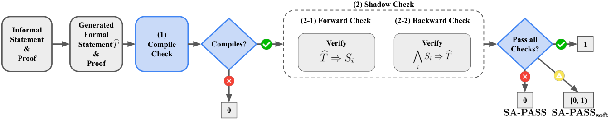

Introduces SA-Pass metric and ShadowBench, a Lean 4 autoformalization benchmark using shadow theorems checked via Lean implication proofs.
Abstract
Autoformalization translates informal mathematical theorems into code for proof assistants such as Lean. A central challenge is that current evaluation metrics can accept type-correct but misaligned statements or reject correct statements written in a different formulation. Inspired by Pass@$k$, we propose SA-Pass (*Semantic Alignment Pass*), which tests formal statements using auxiliary statements called *shadows* that characterize the intended statement. A generated statement receives full credit only when it compiles, implies each shadow (forward check), and is implied by their conjunction (backward check). We instantiate SA-Pass in ShadowBench, a Lean 4 full autoformalization benchmark of 178 postgraduate- to research-level problems spanning eight mathematical areas. Claude Code (Opus 4.8) with Numina-Lean-Agent reaches $61.8\%$ compile rate and $11.2\%$ SA-Pass. Across outputs generated by six agentic configurations, SA-Pass achieves $98.8\%$ binary agreement with expert judgments. An early version of ShadowBench served as the benchmark for Track 4 of the ICML 2026 AI4Math Challenge.
Problem
Autoformalization translates informal theorems into proof-assistant code such as Lean, but current evaluation metrics accept type-correct yet semantically misaligned statements or reject valid alternative formulations. Manual expert judgment is reliable but too costly to scale.
Approach
SA-Pass (Semantic Alignment Pass) tests generated formal statements against auxiliary statements called shadows: a statement gets credit only if it compiles, implies each shadow (forward check), and is implied by their conjunction (backward check). These checks are verified as Lean implication proofs. The authors build ShadowBench, a Lean 4 full autoformalization benchmark of 178 postgraduate- to research-level problems across eight areas, with LLM-assisted, compiler-verified shadow/checker construction.

Figure 3: Evaluation procedure for SA-Pass and SA-Pass soft on one ShadowBench problem.
Results
Claude Code (Opus 4.8) with Numina-Lean-Agent reaches 61.8% compile rate but only 11.2% SA-Pass, showing compile success overstates alignment. Across six agentic configurations, SA-Pass reaches 98.8% binary agreement with expert judgments and F1 of 0.964, far above compile rate, BLEU, BEq+, and LLM-as-judge.
Metric
Precision
Recall
F1
Agreement
Compile
0.178
1.000
0.302
0.178
BEq+
0.400
0.186
0.254
0.806
SA-Pass soft
0.414
0.953
0.577
0.752
SA-Pass
1.000
0.930
0.964
0.988
Agreement of automatic metrics with expert judgments